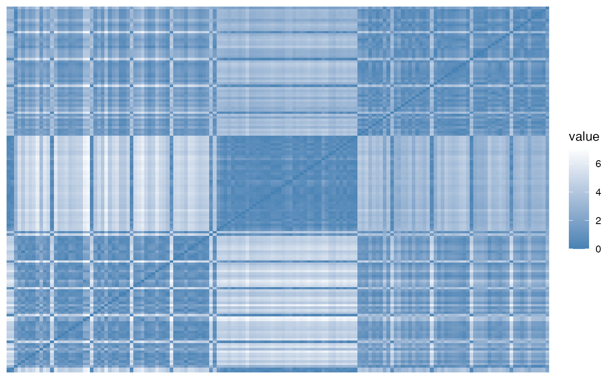
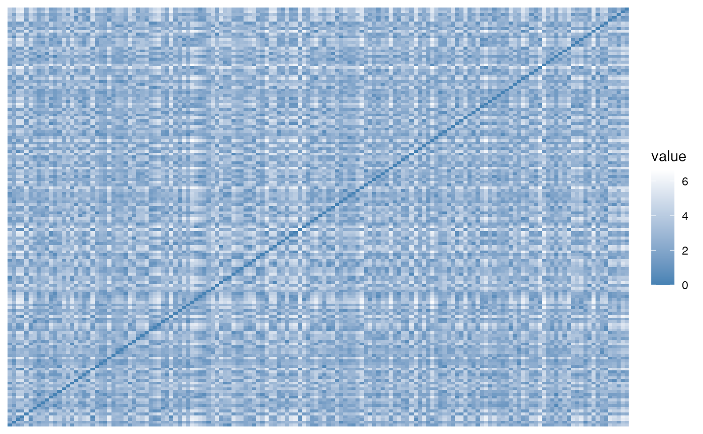

get_clust_tendency.RdBefore applying cluster methods, the first step is to assess whether the data is clusterable, a process defined as the assessing of clustering tendency. get_clust_tendency() assesses clustering tendency using Hopkins' statistic and a visual approach. An ordered dissimilarity image (ODI) is shown. Objects belonging to the same cluster are displayed in consecutive order using hierarchical clustering. For more details and interpretation, see STHDA website: Assessing clustering tendency.
get_clust_tendency(data, n, graph = TRUE, gradient = list(low = "red", mid = "white", high = "blue"), seed = 123)
| data | a numeric data frame or matrix. Columns are variables and rows are samples. Computation are done on rows (samples) by default. If you want to calculate Hopkins statistic on variables, transpose the data before. |
|---|---|
| n | the number of points selected from sample space which is also the number of points selected from the given sample(data). |
| graph | logical value; if TRUE the ordered dissimilarity image (ODI) is shown. |
| gradient | a list containing three elements specifying the colors for low, mid and high values in the ordered dissimilarity image. The element "mid" can take the value of NULL. |
| seed | an integer specifying the seed for random number generator. Specify seed for reproducible results. |
A list containing the elements:
- hopkins_stat for Hopkins statistic value
- plot for ordered dissimilarity image. This is generated using the
function fviz_dist(dist.obj).
Hopkins statistic: If the value of Hopkins statistic is close to 1 (far above 0.5), then we can conclude that the dataset is significantly clusterable.
VAT (Visual Assessment of cluster Tendency): The VAT detects the clustering tendency in a visual form by counting the number of square shaped dark (or colored) blocks along the diagonal in a VAT image.
data(iris) # Clustering tendency gradient_col = list(low = "steelblue", high = "white") get_clust_tendency(iris[,-5], n = 50, gradient = gradient_col)#> $hopkins_stat #> [1] 0.8191482 #> #> $plot#># Random uniformly distributed dataset # (without any inherent clusters) set.seed(123) random_df <- apply(iris[, -5], 2, function(x){runif(length(x), min(x), max(x))} ) get_clust_tendency(random_df, n = 50, gradient = gradient_col)#> $hopkins_stat #> [1] 0.4846408 #> #> $plot#>